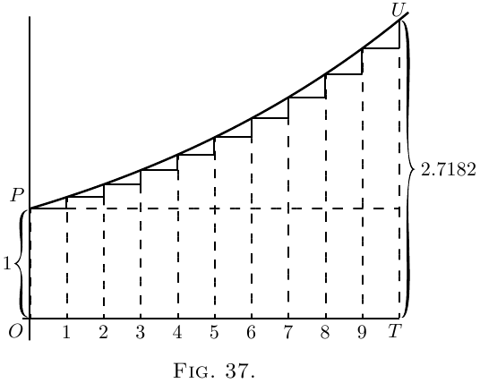

Na Figura 37, temos a ilustração correspondente da
progressão geométrica. Cada uma das ordenadas sucessivas
deve ser $1 + \dfrac{1}{n}$, isto é, $\dfrac{n+1}{n}$ vezes tão alta quanto
sua predecessora. Os degraus para cima não são iguais, porque
cada degrau para cima é agora $\dfrac{1}{n}$ da ordenada naquela parte da
curva. Se tivéssemos literalmente $10$ degraus, com $\left(1 + \frac{1}{10} \right)$
como fator multiplicador, o total final seria
$(1 + \tfrac{1}{10})^{10}$ ou $2.594$ vezes o $1$ original. Mas se apenas
tomarmos $n$ suficientemente grande (e o correspondente
$\dfrac{1}{n}$ suficientemente pequeno), então o valor final $\left(1 + \dfrac{1}{n}\right)^n$ a
que a unidade crescerá será $2.71828$.
 Épsilon. A este número misterioso $2.7182818$
etc., os matemáticos atribuíram como símbolo
a letra grega $\epsilon$ (pronunciada épsilon). Todos os escolares
sabem que a letra grega $\pi$ (chamada pi) representa
$3.141592$ etc.; mas quantos deles sabem que
épsilon significa $2.71828$? E no entanto é um número ainda mais
importante que $\pi$!
O que é, então, épsilon?
Suponha que deixássemos $1$ crescer a juros simples
até se tornar $2$; então, se à mesma taxa nominal de
juros, e pelo mesmo tempo, deixássemos $1$ crescer
a verdadeiros juros compostos, em vez de simples, ele
cresceria ao valor épsilon.
Este processo de crescer proporcionalmente, a cada
instante, à magnitude naquele instante, algumas pessoas
chamam de uma taxa logarítmica de crescimento. Taxa logarítmica
unitária de crescimento é aquela taxa que em tempo unitário fará
$1$ crescer a $2.718281$. Também poderia ser
chamada a taxa orgânica de crescimento: porque é
característica do crescimento orgânico (em certas circunstâncias)
que o incremento do organismo em um
tempo dado seja proporcional à magnitude do
próprio organismo.
Se tomarmos $100$ por cento como a unidade de taxa,
e qualquer período fixo como a unidade de tempo, então o
resultado de deixar $1$ crescer aritmeticamente à taxa unitária,
por tempo unitário, será $2$, enquanto o resultado de deixar $1$
crescer logaritmicamente à taxa unitária, pelo mesmo tempo,
será $2.71828\ldots$,.
Um pouco mais sobre Épsilon. Vimos que
precisamos saber que valor é atingido pela
expressão $\left(1 + \dfrac{1}{n}\right)^n$, quando $n$ se torna indefinidamente
grande. Aritmeticamente, aqui estão tabulados muitos
valores (que qualquer um pode calcular com a ajuda
de uma tabela ordinária de logaritmos) obtidos ao assumir
$n = 2$; $n = 5$; $n = 10$; e assim por diante, até $n = 10{,}000$.
\[
\begin{aligned}
(1 + \tfrac{1}{2})^2 &= 2.25. \\
(1 + \tfrac{1}{5})^5 &= 2.488. \\
(1 + \tfrac{1}{10})^{10} &= 2.594. \\
(1 + \tfrac{1}{20})^{20} &= 2.653. \\
(1 + \tfrac{1}{100})^{100} &= 2.705. \\
(1 + \tfrac{1}{1000})^{1000} &= 2.7169. \\
(1 + \tfrac{1}{10,000})^{10,000} &= 2.7181.
\end{aligned}
\]
Vale a pena, contudo, achar outro modo de
calcular este número imensamente importante.
Consequentemente, lançaremos mão do teorema
binomial, e expandiremos a expressão $\left(1 + \dfrac{1}{n}\right)^n$ daquele
modo bem conhecido.
O teorema binomial dá a regra de que Ora, se supusermos $n$ se tornar indefinidamente grande,
digamos um bilhão, ou um bilhão de bilhões, então $n - 1$, $n - 2$,
e $n - 3$, etc., serão todos sensivelmente iguais a $n$; e
então a série se torna Tomando esta série rapidamente convergente até quantos
termos quisermos, podemos calcular a soma até
qualquer ponto desejado de precisão. Aqui está o cálculo
para dez termos: